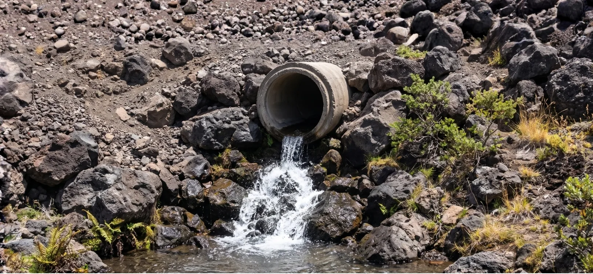
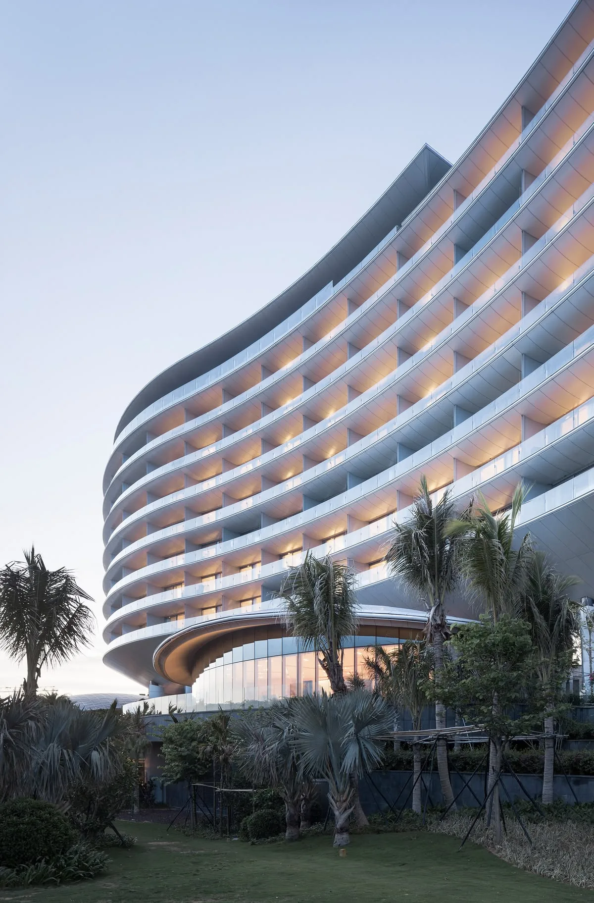
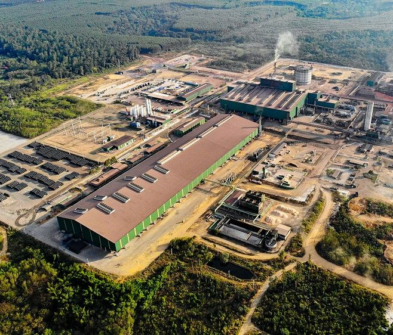
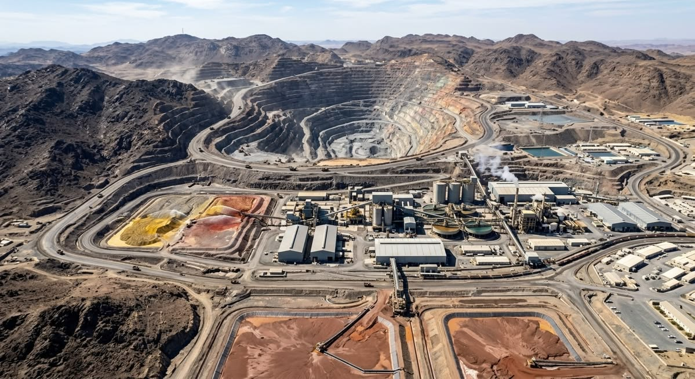
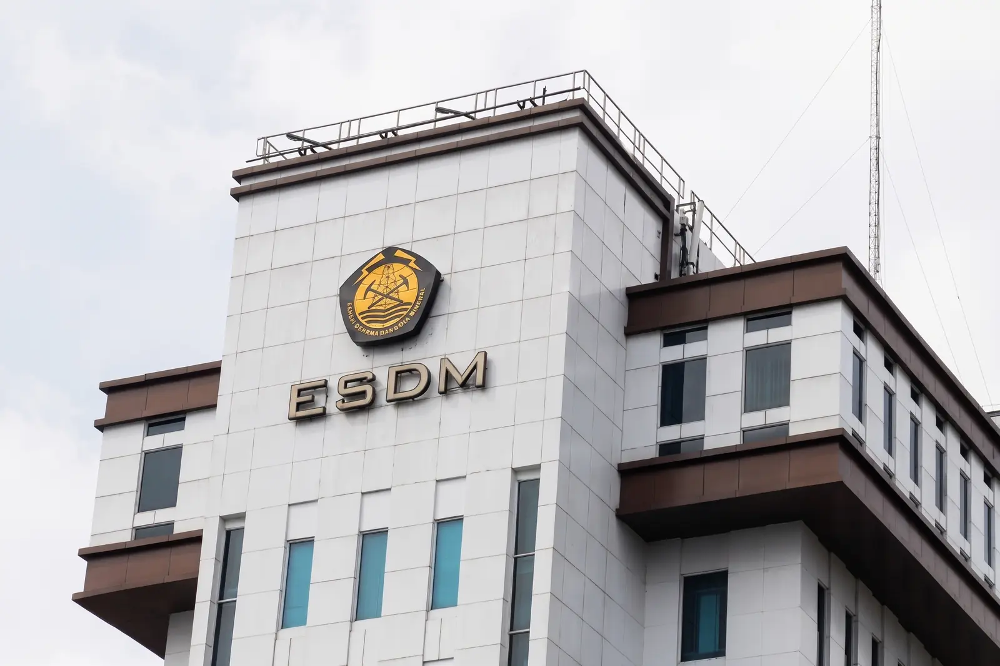

Groundwater Permit & Regulatory Compliance
Layanan ini membantu pelaku usaha mengurus izin atau persetujuan penggunaan air tanah di Indonesia. Sasarannya hotel, vila, resor, perkebunan, industri, dan proyek konstruksi yang memakai air tanah. Lenusa menyiapkan studi teknis dan dokumen, mengajukannya lewat sistem resmi pemerintah, lalu mendampingi prosesnya sampai izin terbit.
Lihat Layanan KamiPaket Layanan
-

Standard Business Package
- Untuk
- Hotel, vila, dan resor, sampai dua titik sumur.
-

Large-Scale Business Package
- Untuk
- Perkebunan dan fasilitas industri, sampai empat titik sumur.
-

Regular Non-Business Package
- Untuk
- Fasilitas dengan sumur pantau.
-
Dewatering Package
- Untuk
- Proyek konstruksi yang butuh dewatering sementara.
Empat paket. Setiap paket mencakup:
- Survei lapangan dan kajian teknisPengumpulan data langsung di lokasi serta analisis kelayakan teknis sebagai dasar pemenuhan standar regulasi.
- Penyusunan dokumen teknis dan administrasiPenyiapan berkas persyaratan, laporan kajian, dan kelengkapan legalitas yang terstruktur sesuai ketentuan instansi terkait.
- Pengajuan lewat sistem resmi pemerintahProses unggah berkas dan registrasi permohonan perizinan secara terintegrasi melalui portal layanan resmi pemerintah.
- Pendampingan sampai izin terbitPemantauan progres verifikasi, koordinasi tindak lanjut revisi, hingga dokumen perizinan resmi diterbitkan.
Mengapa layanan ini dibutuhkan?
-
Pemakaian untuk usaha wajib berizin
Untuk kegiatan bukan usaha, pemakaian di atas batas tertentu wajib punya persetujuan.
-
Izin tidak dipungut biaya
Pemerintah tidak memungut biaya pengurusan izin (Pasal 24 Permen ESDM 14/2024). Biaya yang timbul adalah biaya proses penyusunannya.
-
Keputusan akhir di instansi pemerintah
Persetujuan selalu di tangan instansi yang berwenang. Lenusa tidak menjamin izin terbit.

Our Service Process
-
Initial Consultation
Identify the business activity, water source, and estimated daily usage to determine the correct permit pathway.
-
Survey & Technical Study
Our hydrogeology team conducts field assessment and prepares supporting technical data.
-
Document Preparation & Submission
All documentation is prepared to regulatory standard and submitted through official government channels.
-
Process Accompaniment
We monitor and follow up on the application until the permit is officially issued.
-
Ongoing Compliance Support
For clients who need it, we provide continued support or periodic usage reporting to maintain long-term compliance.
Kerangka Regulasi
Apa saja jenis izin penggunaan air tanah?
Izin Pengusahaan Air Tanah (SIPA) untuk kegiatan usaha, diajukan lewat sistem OSS. Persetujuan Penggunaan Air Tanah (PPAT) untuk kegiatan bukan usaha, diajukan lewat aplikasi perizinan online. Dewatering konstruksi masuk PPAT. (Pasal 2, 6, 7, 8; Permen ESDM 14/2024).
Siapa yang tidak perlu persetujuan penggunaan air tanah?
Kebutuhan pokok di bawah 100 m³ per bulan, kantor instansi pemerintah, rumah ibadah, pertanian rakyat bukan usaha, dan dewatering terkait tambang, migas, atau panas bumi. (Pasal 6 ayat 2; Permen ESDM 14/2024).
Berapa lama masa berlaku izin dan kapan diperpanjang?
SIPA 5 tahun. PPAT paling lama 7 tahun untuk penggunaan selain kebutuhan pokok. PPAT dewatering paling lama 1 tahun. Perpanjangan diajukan 6 sampai 2 bulan sebelum habis. (Pasal 12, 13, 25, 26; Permen ESDM 14/2024).
Berapa lama proses penerbitan izin?
Paling lama 14 hari kerja jika berkas lengkap. Perbaikan berkas wajib diserahkan dalam 7 hari kerja, jika tidak permohonan batal. (Pasal 7, 8; Permen ESDM 14/2024).
Apakah pengurusan izin dikenakan biaya?
Tidak dipungut biaya. Denda administratif hanya untuk sumur yang belum berizin (penataan). (Pasal 24; Pasal 17 sampai 19; Permen ESDM 14/2024).
Apa saja kewajiban pemegang SIPA?
Memasang meter air, membangun sumur pantau dengan AWLR, dan menyerahkan laporan teknis tiap 6 bulan bila mengambil lebih dari 10 m³ per hari. Laporan memuat rekap debit bulanan, kualitas air tiap 6 bulan, dan muka air tanah bulanan. (Pasal 9, 10; Permen ESDM 14/2024).
Berapa batas debit di zona konservasi?
Zona perlindungan maksimal 25 m³ per hari. Zona kritis maksimal 10 m³ per hari. Zona rusak tidak menerima izin baru. (Pasal 20; Permen ESDM 14/2024).
Siapa yang berwenang menerbitkan izin?
Menteri untuk wilayah sungai lintas negara, lintas provinsi, dan strategis nasional. Gubernur untuk lintas kabupaten atau kota. Bupati atau wali kota untuk dalam satu kabupaten atau kota. (Pasal 2 ayat 4; Permen ESDM 14/2024).
Kapan sumur wajib ditutup?
Sumur wajib ditutup dalam 30 hari kalender setelah izin dicabut atau berakhir. (Pasal 16, 27; Permen ESDM 14/2024).